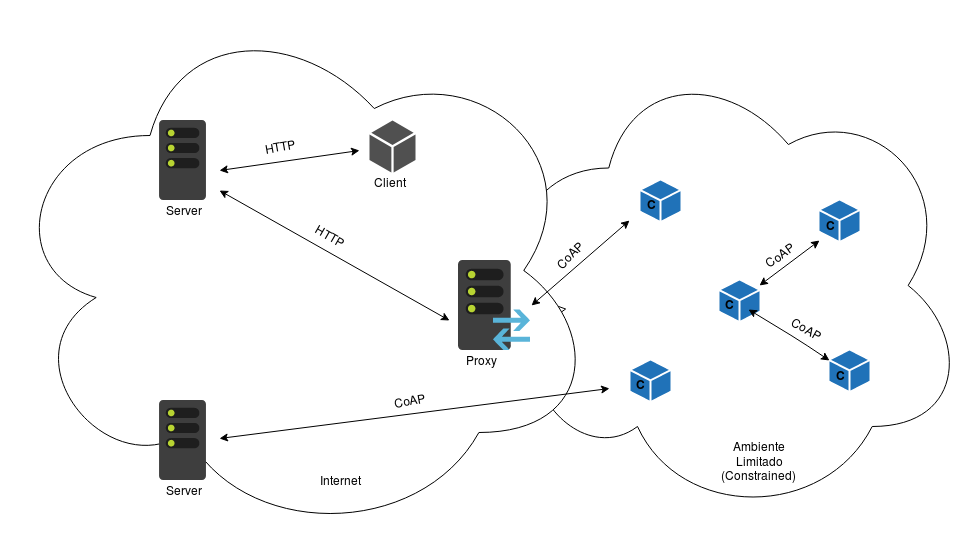

CoAP não foi apenas projetado para trabalhar em arquiteturas REST, mas também para implementar algumas
funcionalidades encontradas no protocolo HTTP. Consequentemente, isso facilita com que o CoAP interopere com HTTP, logo, o
mapeamento entre os dois protocolos torna-se direto.
Esse mapeamento é benéfico para dispositivos que não conseguem operar ou entender o CoAP, permitindo que sensores
compartilhem informações com a web ou que até dispositivos mais inteligentes consigam interagir com esses sensores.

Figura 10: Arquitetura do Protocolo da Camada de Aplicação CoAP.
Existem duas possíveis direções para acessar um recurso via forward-proxy:
CoAP-HTTP Proxying : Permite acesso aos clientes CoAP de recursos de servidores HTTP através
de um intermediário. Isso é inicializado ao incluir Proxy-URI ou a opção Proxy-Scheme com uma
URI "http" ou "https" em um request CoAP a um CoAP-HTTP proxy.
HTTP-CoAP Proxying Permite acesso aos clientes HTTP de recursos de servidores CoAP através de um
intermediário. Isso é inicializado ao especificar uma URI "coap" ou "coaps" em uma request-line
de um request HTTP a um HTTP-CoAP proxy.
Um servidor é descoberto por um cliente utilizando uma URI que faz referência à localização da sua porta UDP.
Alternativamente, clientes podem usar multicast CoAP para encontrar o endereço de mais de um servidor CoAP.
Caso a porta não seja especificada, assume-se que o servidor possa ser encontrado através da porta padrão 5683.
A descoberta de recursos oferecida pelo endpoint do CoAP é extremamente importante em aplicações M2M
(Machine to Machine) em que não existem humanos, e interfaces estáticas resultam em um sistema mais vulnerável.
Essa descoberta é baseada em diretório de dispositivos.
A busca por serviços em CoAP pode ser realizada mediante a utilização de parâmetros adicionados à string de consulta por
dispositivos, enviada ao respectivo diretório de recursos.
Para maximizar interoperabilidade em um ambiente CoRE, um endpoint CoAP deve suportar o "CoRE
Link Format" de recursos descobertos, que tem como atributos o Resource Type
, o Interface Description e o Context Type.
O Resource Type é responsável por identificar a função de um dado recurso, como coletar dados
de temperatura, luminosidade, ou qualquer outro dado que seja; o Interface Description
indica os métodos que podem ser utilizados para a comunicação com esse recurso, como, por exemplo, GET, POST
e outros definidos pelo REST; o Context Type indica o formato dos dados fornecidos pelo recurso.
Esses são os atributos suportados por um endpoint CoAP, exceto quando configurações
completamente manuais são desejadas. Cabe ao servidor definir quais recursos são feitos detectáveis (se houver).
Comunicação multicast é uma relação de um para vários endpoints.
Dispositivos limitados podem ser associados tanto por sua posição ou propósito, e essas relações podem
tanto ser pré-configuradas ou configuradas durante as operações. Exemplo: um grupo de interruptores
CoAP onde um simples comando de comunicação para o grupo pode acender ou apagar todas as luzes de um andar
específico de um prédio.
A estrutura fundamental de uma comunicação do grupo CoAP são requests enviados via UDP
com um IP multicast e respostas usando UDP com um IP unicast.
Entretanto, para essa comunicação em grupo do CoAP ainda não foi definida uma medida de segurança
para IP multicast, pois DTLS não suporta comunicações multicast.
Portanto, CoAP opera no modo NoSec quando faz transmissões multicast.
Mensagens multicast não requerem confirmação de recebimento, para isso, o servidor deve saber
que a mensagem foi recebida por um fluxo multicast, para evitar uma implosão de erros.
Caso o servidor não esteja ciente, ele deve retornar uma mensagem de RESET. Essa mensagem de RESET será idêntica
a uma mensagem unicast do remetente, portanto, este deve evitar usar um mesmo ID de mensagem
ativo num endpoint que tenha recebido a mensagem multicast.
Caso um servidor queira responder uma mensagem multicast, deve escolher uma duração para
o período de tempo durante o qual pretende responder. Se mais respostas precisarem ser enviadas com base na
mesma associação de endereço multicast,
um novo período de espera (leisure period) começa imediatamente após o término do intervalo
de tempo de envio do primeiro. Esse tempo de espera depende da aplicação, mas pode ser modelado previamente como:
lb_Leisure = S * G / R
Em que S é o tamanho estimado de resposta (Response Size), G é o tamanho estimado do grupo
de envio (Group Size) e R, a taxa de transferência de dados (Data Transfer Rate).